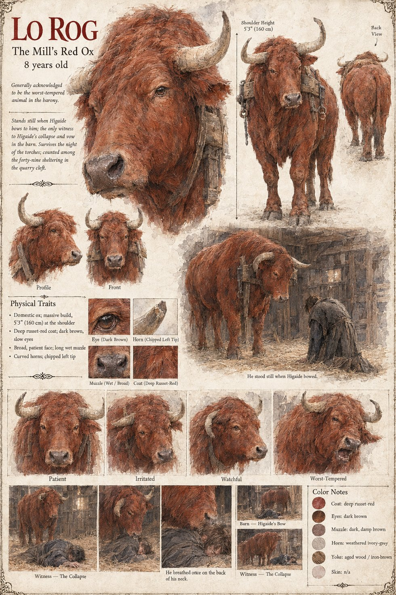

Lo Rog
The red ox of the Mill of the Two Weirs · the worst-tempered animal in the barony · 8 years old by his sheet
The mill's red ox, generally acknowledged to be the worst-tempered animal in the barony, who has bitten a priest and kicked a cooper. He is a stubborn animal and a patient one: he will stand quite still if the stranger bows to him first, and the household, which has resisted the idea of the bow for weeks, adopts it for the ox before it does for anyone else. When Ermengarda is asked to say what sort of man the Moon-Man is, it is the ox she cites: He bows to everything. He bowed to the ox.
He is the only witness of the worst hour of Higaide's life. On an afternoon in Iverin, the day before the first frost, Old Bernat walks the stranger out under the oak and tells him where the last man out of the stone lies, and Higaide goes to the barn and down on his knees in the straw with his forehead against the red ox's flank, leaning the whole weight of his body on the warm, patient, chewing animal. It lasts an hour. Lo Rog stands quite still in his stall and chews, with the slow immovable patience of an animal that has borne a good deal in its life, and does not so much as shift his weight. When it is over Higaide lays Yoake and Yoiyami across his open palms in the straw and tells the only witness in the building who will not repeat it that he will not draw them in this house, whatever the house comes to cost; and the ox turns his great red head and breathes once on the back of his neck, as one acknowledges a signature. On the night of the torches Higaide leads him up the frozen lane by the halter, and the manuscript counts one ox among the forty-nine in the quarry cleft.
The bow goes with the man. Nineteen years on, in Case 4181, he bows from the waist, with his hands flat on his thighs, to another ox, Brun, in the fog of the Hohlweg. Case 0202 has Lo Rog look in at the kettle while Higaide tries to say a word back. The manuscript gives Lo Rog his colour, his temper, his bites and kicks, the barn and the bow; the age is the sheet's, and so are the 5 ft 3 in at the shoulder, the dark brown slow eyes, the long wet muzzle, the curved horns with the chipped left tip and the yoke of aged wood and iron. Its expression panels run Patient, Irritated, Watchful and Worst-Tempered, and its three small scenes draw the barn: He stood still when Higaide bowed, Witness: the collapse and He breathed once on the back of his neck.
“Breathed once on the back of his neck, as one acknowledges a signature.”
Appears In

Related Subjects


Related Records

Shortly after Old Bernat has shown him the fieldstone where Kaneyoshi lies, Tomobe no Higaide kneels against the red ox Lo Rog in the barn and, his two swords laid in the straw, vows in his own language not to draw them in this house; Gersenda keeps her small brother back.